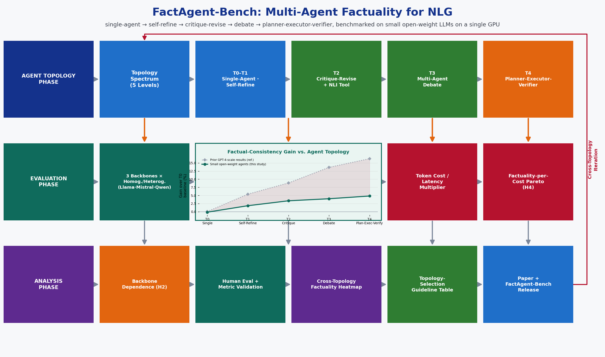

Multi-agent LLM pipelines -- self-refinement, critique-revise, debate, and planner-executor-
verifier architectures -- have been shown to reduce hallucination and improve factual
consistency in text generation, but nearly all of that evidence comes from GPT-3.5/GPT-4-scale
agents. The goal of this project is to build a rigorous, reproducible benchmark that tests
whether those gains transfer to small (7-8B parameter) open-weight LLMs running entirely on a
single AWS g5.2xlarge instance (1x NVIDIA A10G, 24 GB VRAM, 8 vCPUs, 32 GiB RAM) -- the compute
budget an individual practitioner or small team actually has, as opposed to a frontier-model API
budget.
Key Objectives:
1. Implement five agent topologies of increasing sophistication: (T0) single-agent zero/few-
shot generation; (T1) Self-Refine, where one agent iteratively critiques and revises its own
output (Madaan et al., 2023); (T2) Critique-Revise with a dedicated Critic agent role,
optionally tool-augmented with an NLI-based fact-checking tool (CRITIC-style, Gou et al.,
2023); (T3) Multi-Agent Debate, where independent generator agents exchange critiques over
multiple rounds and converge via a judge/aggregator (Du et al., 2023; Chan et al., 2023);
(T4) a Planner-Executor-Verifier pipeline with claim-level fact verification and a bounded
revision loop (MetaGPT/CAMEL-style role specialization, Hong et al., 2023; Li et al., 2023).
2. Apply every topology to two natural language generation tasks where hallucination is a
well-documented failure mode: abstractive summarization and grounded long-form question
answering.
3. Run every topology across three small open-weight instruction-tuned backbones (Llama-3.1-8B-
Instruct, Mistral-7B-Instruct-v0.3, Qwen2.5-7B-Instruct), 4-bit quantized and served locally,
in both homogeneous (all agent roles share one backbone) and heterogeneous (each role uses a
different backbone) configurations, to test whether backbone diversity itself improves
factuality at matched agent count.
4. Measure, for every (topology, backbone, task) combination: automatic factual-consistency
scores, standard NLG quality metrics, citation-attribution accuracy for grounded QA, and --
critically -- the token cost and wall-clock latency each topology adds relative to the
single-agent baseline, to characterize the factuality-gain-per-compute-cost trade-off.
5. Validate the automatic factuality metrics against a held-out human evaluation, and package
the full pipeline -- agents, topologies, metrics, and the resulting benchmarking DataFrame --
as an open-source, config-driven repository (FactAgent-Bench).

Figure 1: Caption All datasets below are publicly available for research use with no restricted access. The
project organizes them into three tiers: two generation tasks used for the main topology sweep,
and a held-out stress test used only for generalization checks.
TIER 1 -- ABSTRACTIVE SUMMARIZATION (HIGH HALLUCINATION RISK):
1. XSum (Narayan et al., 2018) -- single-sentence, highly abstractive BBC news summaries;
the standard testbed for hallucination in summarization:
https://huggingface.co/datasets/EdinburghNLP/xsum
2. CNN/DailyMail (Hermann et al., 2015; See et al., 2017 non-anonymized version) -- longer,
more extractive news summaries, used as a lower-hallucination-risk contrast condition:
https://huggingface.co/datasets/abisee/cnn_dailymail
3. SAMSum (Gliwa et al., 2019) -- dialogue summarization, a distinct genre/register from news:
https://huggingface.co/datasets/Samsung/samsum
4. Human factual-consistency labels for metric validation: FactCC test set (Kryscinski et al.,
2020), SummaC benchmark (Laban et al., 2022), and AggreFact (Tang et al., 2023) -- used in
Week 3 to sanity-check the automatic factuality-metric pipeline before it is trusted for the
main sweep
TIER 2 -- GROUNDED LONG-FORM QUESTION ANSWERING:
5. ASQA (Stelmakh et al., 2022) -- ambiguous factoid questions requiring long-form, multi-aspect
answers grounded in provided Wikipedia passages, with the ALCE evaluation framework (Gao et
al., 2023) for citation-attribution precision/recall: https://github.com/princeton-nlp/ALCE
6. ELI5 (Fan et al., 2019) -- open-ended long-form QA with weaker grounding, used as a contrast
condition to ASQA's strong Wikipedia grounding:
https://huggingface.co/datasets/eli5_category
TIER 3 -- HELD-OUT HALLUCINATION STRESS TEST (evaluation only, not tuned on):
7. HaluEval (Li et al., 2023) -- QA and summarization hallucination benchmark with sampled and
human-annotated hallucinated/non-hallucinated pairs: https://github.com/RUCAIBox/HaluEval
8. RAGTruth (Niu et al., 2024) -- span-level hallucination annotations for retrieval/context-
grounded generation: https://github.com/ParticleMedia/RAGTruth
DATASET / PIPELINE PREPARATION:
- Standardize every tier behind a common loader that pairs each source document/question with
its grounding evidence (source article, dialogue, or retrieved Wikipedia passages) so every
factuality metric and every Verifier-agent tool call has a fixed evidence set to check against
- No live web search or external retrieval API is required -- every dataset ships with its own
grounding evidence, keeping the pipeline reproducible and free of flaky external dependencies
- Fix a stratified evaluation sample per (task, tier) for both automatic metrics and the Week 14
human evaluation, with a documented random seed
Multi-agent LLM pipelines are one of the most active current threads in NLP: Self-Refine
(Madaan et al., 2023) and Reflexion (Shinn et al., 2023) show a single agent can improve its own
output through iterative self-critique; Du et al. (2023) show multi-agent debate improves
factuality and reasoning; ChatEval (Chan et al., 2023) shows multi-agent debate improves
evaluation quality; CRITIC (Gou et al., 2023) shows tool-augmented critiquing corrects factual
errors; and MetaGPT (Hong et al., 2023) / CAMEL (Li et al., 2023) show role-specialized agent
pipelines can tackle complex tasks end to end. Frameworks like AutoGen (Wu et al., 2023) have
made these architectures easy to build.
But almost all of this evidence was generated with GPT-3.5- or GPT-4-scale agents. Whether the
same gains hold when every agent is a small (7-8B parameter) open-weight model -- the regime an
individual practitioner or student team can actually afford to run continuously -- is an open
question with real practical stakes: if small agents cannot reliably critique or debate, then
multi-agent pipelines are simply a compute-cost multiplier with no factuality benefit at this
scale, and practitioners deploying on limited hardware should know that before adopting them.
No existing study directly benchmarks the full topology spectrum (single-agent through
planner-executor-verifier) against multiple small open-weight backbone families, in both
homogeneous and heterogeneous agent configurations, while also reporting the added inference
cost each topology imposes. This project fills that gap.
WHY THIS PROJECT IS TIMELY AND PUBLISHABLE:
- Small-model agentic pipelines are an active, fast-moving research area with dedicated venues:
ACL/EMNLP/NAACL workshops on trustworthy NLG and LLM agents, and a growing multi-agent-systems
presence at NeurIPS/ICLR workshops.
- The factuality-gain-per-token-cost framing directly connects to the test-time-compute-scaling
literature (Snell et al., 2024), giving the project a clean, citable analytical contribution
beyond a simple accuracy leaderboard.
- The homogeneous-vs-heterogeneous backbone comparison (H3 below) is underexplored in prior
multi-agent debate work, which mostly uses identical or API-only agents, and is directly
testable once several small open-weight models are already deployed on the same GPU.
- A negative or plateauing result (small agents cannot reliably self-correct) is just as
publishable and useful to practitioners as a positive one -- the project is designed so every
outcome is a reportable finding, not a failure condition.
- The entire pipeline runs on one AWS g5.2xlarge using 4-bit quantization and vLLM serving,
specifically so the project stays tractable for a student team without a multi-GPU cluster or
a frontier-model API budget.
PHASE 1: FOUNDATIONS & INFRASTRUCTURE (Weeks 1-2)
[Week 1: Setup & Data Pipeline]
- Install vLLM, HuggingFace transformers/accelerate, bitsandbytes/AutoAWQ, an agent-orchestration
framework (AutoGen), and the factuality-metric libraries (SummaC, SelfCheckGPT, ALCE eval
scripts, rouge-score, bert-score)
- Build the three-tier data pipeline (Tiers 1-3) with fixed evaluation samples and seeds;
project structure: agents/, topologies/, datasets/, metrics/, benchmarks/, notebooks/
- Create a model_registry.csv (backbone, quantization, context length, measured throughput) and
a run_matrix.csv enumerating every planned (topology x backbone x task x
homogeneous/heterogeneous) experiment up front, to keep the total run count bounded
[Week 2: Backbone Serving & Sanity Checks]
- Deploy Llama-3.1-8B-Instruct, Mistral-7B-Instruct-v0.3, and Qwen2.5-7B-Instruct, 4-bit
quantized, behind a common local OpenAI-compatible vLLM serving endpoint on the g5.2xlarge
- Validate throughput/latency and basic instruction-following per backbone before any agent
pipeline is layered on top
PHASE 2: SINGLE-AGENT & SELF-REFINE BASELINES (Weeks 3-4)
[Week 3: T0 Baseline & Metric Validation]
- Implement T0 (single-agent zero/few-shot generation) on Tier 1 (summarization)
- Implement the automatic factuality-metric pipeline (FactCC, SummaC, BERTScore, ROUGE-L) and
validate it against AggreFact's human factual-consistency labels before trusting it for the
main sweep
[Week 4: T1 Self-Refine]
- Implement Self-Refine (Madaan et al., 2023): the same agent critiques and revises its own
output over a fixed round budget (up to 3 rounds, early-stopping on convergence)
- Run T0 and T1 across all three backbones on Tier 1
PHASE 3: CRITIQUE-REVISE & TOOL-AUGMENTED VERIFICATION (Weeks 5-6)
[Week 5: T2 Critique-Revise]
- Implement T2 with a dedicated Critic agent role (a distinct persona/prompt from the Generator),
optionally CRITIC-style tool-augmented (Gou et al., 2023): the Critic can call a lightweight
NLI entailment model (e.g., a DeBERTa-based NLI classifier) as a fact-checking tool against the
source document
[Week 6: Extend to Long-Form QA]
- Run T2 across all three backbones x Tier 1; extend T0/T1/T2 to Tier 2 (ASQA/ELI5), adding
ALCE-style citation-attribution precision/recall to the metric suite for grounded QA
PHASE 4: MULTI-AGENT DEBATE (Weeks 7-8)
[Week 7: Homogeneous Debate]
- Implement T3 Multi-Agent Debate (Du et al., 2023): 3 independent generator agents produce
initial answers, exchange critiques over up to 3 rounds, and converge via a judge/aggregator
agent (optionally ChatEval-style, Chan et al., 2023); homogeneous configuration first (all 3
debaters share one backbone)
[Week 8: Heterogeneous Debate]
- Add the heterogeneous-backbone configuration (one debater per backbone family) to directly
test H3; run T3 (homogeneous + heterogeneous) across Tiers 1-2
PHASE 5: PLANNER-EXECUTOR-VERIFIER PIPELINE (Weeks 9-10)
[Week 9: T4 Implementation]
- Implement T4: a Planner agent decomposes the source document/question into claims or an
answer outline; an Executor/Writer agent drafts the summary/answer per the plan; a Verifier
agent checks each claim against the source (reusing the NLI fact-checking tool from Phase 3)
and triggers a bounded revision loop on failed claims (MetaGPT/CAMEL-style role specialization,
Hong et al., 2023; Li et al., 2023)
[Week 10: Full T4 Sweep]
- Run T4 across all three backbones x Tiers 1-2; log per-topology token cost and wall-clock
latency for every run in every phase so far -- required input for the Phase 6 Pareto analysis
PHASE 6: HALLUCINATION STRESS-TEST & CROSS-CONDITION ANALYSIS (Weeks 11-12)
[Week 11: Held-Out Generalization Check]
- Evaluate the best-performing configuration per topology (selected from Tiers 1-2) on the
held-out Tier 3 stress-test benchmarks (HaluEval, RAGTruth) to test whether factuality gains
generalize outside the tuning distribution
[Week 12: Master Benchmark Assembly]
- Assemble the full benchmarking DataFrame: (topology x backbone x task x
homogeneous/heterogeneous) -> factual-consistency score, ROUGE/BERTScore/citation-attribution,
token cost, latency
- Test the project's four central hypotheses:
H1: Does factual consistency improve monotonically as topology sophistication increases
(T0 -> T4), or does it plateau/reverse because small agents cannot self-correct as
reliably as the GPT-4-scale agents in prior work?
H2: Is the multi-agent benefit backbone-dependent -- do some small model families benefit
more from agentic critique than others?
H3: Does a heterogeneous multi-agent ensemble outperform a homogeneous ensemble at matched
agent count / compute?
H4: What is the factuality-gain-per-token-cost Pareto frontier -- which topology is worth
its added inference cost under a fixed single-GPU latency budget?
PHASE 7: STATISTICAL ANALYSIS & HUMAN EVALUATION (Weeks 13-14)
[Week 13: Statistical Testing]
- Bootstrapped confidence intervals on every factuality delta; regression of factuality gain on
topology sophistication, backbone family, and token-cost multiplier, directly resolving
H1, H2, and H4
[Week 14: Human Evaluation]
- Both students independently rate a stratified sample (~150-200 outputs) for factual
consistency and fluency on a Likert scale, blinded to topology/backbone; compute
inter-annotator agreement (Cohen's kappa / Krippendorff's alpha) and correlate human
judgments with the automatic metrics to validate the automatic-metric pipeline used
throughout the project
PHASE 8: GUIDELINES, PAPER, AND CODE RELEASE (Weeks 15-16)
[Week 15: Research Paper Draft]
Paper structure (8-10 pages, ACL/EMNLP/NAACL Findings or trustworthy-NLG/LLM-agents workshop
format):
1. Abstract: motivation, FactAgent-Bench scope, key findings (H1-H4)
2. Introduction: the small-model gap in the multi-agent-factuality literature
3. Related Work: Self-Refine, Reflexion, Multi-Agent Debate, ChatEval, CRITIC, MetaGPT/CAMEL
4. FactAgent-Bench: topologies, backbones, tasks, evaluation protocol
5. Results: topology-fidelity spectrum, backbone dependence, homogeneous vs. heterogeneous
6. The Factuality-per-Token-Cost Pareto Frontier
7. Practical Guidelines for Single-GPU Agentic NLG Deployment
8. Conclusion & Future Work: extension to tool-augmented RAG and larger agent counts
[Week 16: Code Release & Documentation]
- Publish the FactAgent-Bench GitHub repository: config-driven
run_benchmark.py --topology all --backbone all --task all
- Jupyter notebooks: one per phase and one cross-condition analysis notebook
- README with quickstart, single-GPU reproduction guide, and vLLM serving setup instructions
- requirements.txt with pinned dependencies; final presentation
Week 1: Setup, three-tier data pipeline, model_registry.csv, run_matrix.csv
Week 2: Three backbones deployed via vLLM (4-bit); throughput/latency/sanity checks
Week 3: T0 single-agent baseline on Tier 1; factuality-metric pipeline validated vs. AggreFact
Week 4: T1 Self-Refine implemented and run across all backbones on Tier 1
Week 5: T2 Critique-Revise with tool-augmented NLI fact-checking Critic agent
Week 6: T0/T1/T2 extended to Tier 2 (ASQA/ELI5); ALCE citation-attribution metrics added
Week 7: T3 Multi-Agent Debate, homogeneous-backbone configuration
Week 8: T3 heterogeneous-backbone configuration (H3 test); full Tiers 1-2 sweep
Week 9: T4 Planner-Executor-Verifier pipeline implemented
Week 10: T4 full sweep across backbones/tasks; token-cost and latency logging finalized
Week 11: Held-out generalization check on Tier 3 (HaluEval, RAGTruth)
Week 12: Master benchmarking DataFrame assembled; H1-H4 hypothesis tests run
Week 13: Statistical analysis; factuality-gain regression on topology/backbone/cost
Week 14: Human evaluation (~150-200 outputs); inter-annotator agreement; metric validation
Week 15: Research paper draft (ACL/EMNLP/NAACL Findings or workshop format)
Week 16: FactAgent-Bench code release, README, notebooks, final presentation
TOTAL: 16 weeks (one semester)
KEY MILESTONES:
- Week 4: Single-agent and Self-Refine baselines complete on Tier 1
- Week 6: Critique-Revise complete; pipeline extended to grounded long-form QA
- Week 8: Multi-agent debate complete, including the heterogeneous-backbone test
- Week 10: Planner-Executor-Verifier complete; full cost/latency logging in place
- Week 12: All hypothesis tests (H1-H4) resolved in the master benchmarking DataFrame
- Week 14: Human evaluation complete; automatic metrics validated
- Week 16: Paper submitted; code released to the FactAgent-Bench GitHub repository
DELIVERABLES BY WEEK 16:
- A five-topology agent-sophistication benchmark (single-agent, self-refine, critique-revise,
multi-agent debate, planner-executor-verifier) spanning three small open-weight LLM backbones,
homogeneous and heterogeneous configurations, and two NLG tasks
- Quantitative answers to whether small-model multi-agent factuality gains hold, are backbone-
dependent, benefit from backbone heterogeneity, and are worth their added inference cost
- A human-validated automatic factuality-metric pipeline
- A practical topology-selection guideline table for single-GPU agentic NLG deployment
- Research paper draft (8-10 pages)
- Open-source FactAgent-Bench repository with reproducible notebooks
RECOMMENDED: 2-3 students
ROLE DISTRIBUTION FOR 2 STUDENTS:
Student 1: Serving Infrastructure, Single-Agent & Critique-Based Topologies (T0-T2)
- Responsibilities: vLLM multi-backbone serving setup, T0/T1/T2 implementation, the NLI-based
tool-augmented fact-checking Critic, automatic factuality-metric pipeline and its validation
against AggreFact, model_registry.csv maintenance
- Skills: LLM serving/quantization, prompt engineering, Python, NLI/NLP evaluation metrics
Student 2: Multi-Agent Debate & Planner-Executor-Verifier (T3-T4)
- Responsibilities: multi-agent debate implementation (homogeneous + heterogeneous), the
Planner-Executor-Verifier pipeline, token-cost/latency instrumentation, master benchmarking
DataFrame and hypothesis testing (H1-H4)
- Skills: agent orchestration (AutoGen), statistical analysis, ALCE-style citation-attribution
evaluation
SHARED RESPONSIBILITIES (both students):
- Cross-condition analysis, human evaluation and inter-annotator agreement, guideline synthesis,
paper writing, code documentation, final presentation
- Weekly integration meetings: every topology feeds the same fixed backbone-serving and
evaluation protocol from Phase 1
FOR 3 STUDENTS (optional third role):
Student 3: Benchmarking Infrastructure, Evaluation & Visualization
- Responsibilities: build the config-driven multi-run experiment orchestrator and run_matrix.csv
tracker, own the factuality/citation-attribution evaluation pipeline integration (SummaC,
SelfCheckGPT, ALCE), design and run the human-evaluation interface/protocol, produce all
publication-quality figures (topology-fidelity curves, cost-quality Pareto frontier,
homogeneous-vs-heterogeneous comparison), maintain the FactAgent-Bench repository structure
TECHNICAL CHALLENGES AND SOLUTIONS:
1. Multi-Agent Pipelines Multiply Inference Cost on a Single GPU:
- ISSUE: N agents x multiple rounds means T3/T4 can cost 5-15x the tokens of the T0 baseline
- SOLUTION: 4-bit quantization, vLLM continuous batching/PagedAttention, and a fixed max-round
budget (3 rounds) with early stopping on consensus/no-change; log cost as a first-class metric
feeding directly into the H4 Pareto analysis rather than being treated as a nuisance
2. Small Models May Lack Reliable Self-Critique Ability:
- ISSUE: 7-8B models may not critique their own or each other's outputs as reliably as GPT-4-
scale agents did in prior work, so gains may be smaller, absent, or negative
- SOLUTION: This is the project's central research question (H1), not a bug to engineer away --
a plateau or reversal is a valid, reportable, and publishable finding; design the paper
narrative to accommodate any outcome from Week 1
3. GPU Memory Pressure Serving Multiple Backbones and Concurrent Agent Contexts:
- ISSUE: 24 GB must hold model weights, KV cache, and multiple simultaneous agent contexts
(debate/planner-executor-verifier run several agents per example)
- SOLUTION: Serve one backbone at a time per experiment batch rather than all three
concurrently; 4-bit quantization; bounded context lengths; inference-only workload (no
optimizer state) keeps memory well within budget
4. Automatic Factuality Metrics Are Imperfect Proxies:
- ISSUE: FactCC/SummaC and similar NLI-based metrics are known to disagree with human judgment
in some cases
- SOLUTION: Week 3 validates the metric pipeline against AggreFact's human labels before it is
trusted for the main sweep, and Week 14's human evaluation re-validates it at the end,
reporting the human-automatic correlation explicitly rather than assuming it
5. Debate/Self-Refine Loops May Not Converge:
- ISSUE: Agents can oscillate between positions instead of converging to a consensus revision
- SOLUTION: Fixed max-round budget with early stopping on consensus or no measurable change;
log the non-convergence rate per topology/backbone as a reported statistic, not a discarded
failure case
6. Total Run Count Across the Full Sweep:
- ISSUE: 5 topologies x 3 backbones x 2 tasks x homogeneous/heterogeneous configurations could
balloon the compute budget
- SOLUTION: The full run matrix is enumerated in run_matrix.csv in Week 1 so the total is
bounded and auditable before any runs begin; heterogeneous configurations are only run for
topologies where they are meaningful (T3, T4), not the full matrix
7. Library / Version Drift:
- ISSUE: vLLM, AutoGen, and transformers are all actively maintained; API changes could break
reproducibility mid-semester
- SOLUTION: Pin all dependency versions in requirements.txt from Week 1
RISK MITIGATION TIMELINE:
- Weeks 1-3: Verify backbone serving throughput and the factuality-metric pipeline against
known reference numbers (AggreFact) before the main sweep begins
- Weeks 4-10: Monitor per-topology token cost and non-convergence rate as each topology comes
online; checkpoint intermediate results after every phase
- Weeks 11-12: Cross-check held-out stress-test results against the Tier 1-2 findings for
consistency before finalizing H1-H4
- Weeks 13-14: Have both students independently verify the hypothesis-test results and
cross-check human-evaluation inter-annotator agreement
- Weeks 15-16: 3-day code freeze for README and notebook review before public release